一、RTE概述
1.1 什么是RTE
RTE（Runtime Environment，实时运行环境）的作用有点像一个快递中转站，或者说是电话接线员（就是上个世纪那种要先打电话到接线员那里，然后通过接线员转接电话线到目的地）。其作用就是将一个 SWC 的信息通过 RTE 连接到其他 SWC 或者 BSW 上。
并且 RTE 具有管理这些信息的功能：比如接收的 SWC 正忙（"您所拨打的用户正忙"），那么 RTE 负责让发送信息的 SWC 等待，或者做其他处理；RTE 还能触发 SWC——就像是这时接收的 SWC 在"睡觉"，发送的 SWC 发信息来了，RTE 就要把接收的 SWC"叫醒起床"。
一句话概括：RTE 提供了 SWC 的运行环境。它像一个餐厅服务员，负责协调应用层软件组件（好比顾客）与 ECU 中的不同模块（如账台、厨房、清洁工等）之间的信息流转。
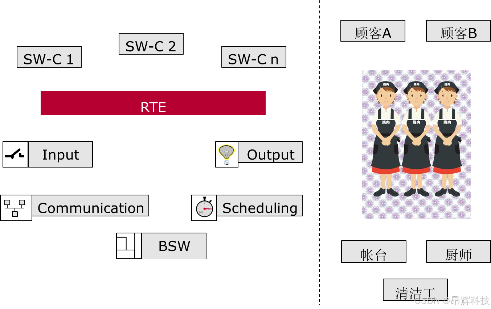
1.2 RTE的作用
RTE 位于 AutoSAR 分层架构的中间层（应用层与基础软件层之间），其主要作用包括：
（1）提供跨 ECU / ECU 内部的通信管理；
（2）提供对 runnable 的管理功能（触发、唤醒等——runnable 需要映射到 Task 上运行，而这个映射就是通过 RTE 具体实现的）；
（3）RTE 是 VFB（虚拟功能总线）的具体实现；
（4）在 Vector 的 DaVinci 工具中配置完成后由工具自动生成，每个 ECU 的 RTE 因 SWC 的需求而异。
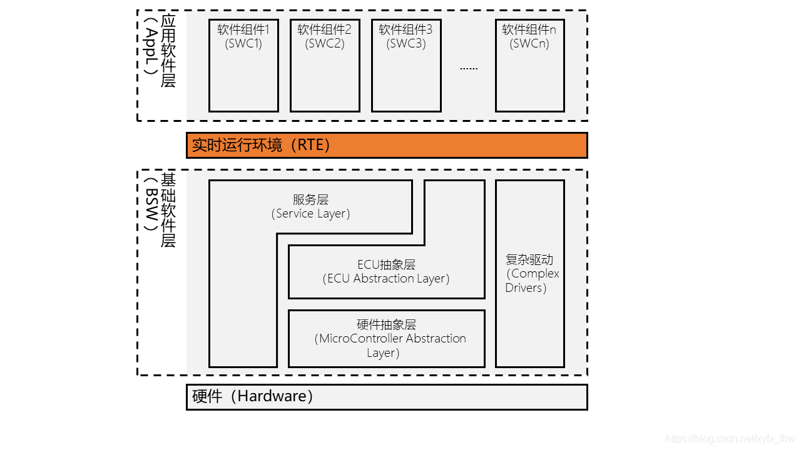
二、RTE对Runnables的运行支撑
2.1 作为运行环境的功能点
RTE 作为 runnable 的运行环境，主要有以下三个功能点：
（1）通过 RTE 给 runnable 提供触发事件——runnable 是可以被触发的，触发和调用 runnable 就需要通过 RTE 来实现；
（2）通过 RTE 给 runnable 提供所需资源——将 runnable 需要的一些资源（如 Ports 接口通信的数据）通过接口传输给它；
（3）将 BSW 和 SWC 做隔绝——因此 OS 和 runnable 也被隔绝了，runnable 的运行条件由 RTE 提供，不能由 OS 直接提供。
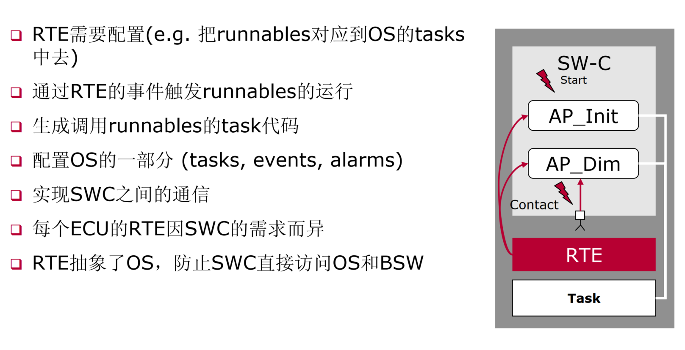
2.2 Runnables的触发条件
RTE 给 runnable 提供触发条件。runnable 在设计的时候必须有触发条件，不然无法运行，也就没有意义了。触发条件就是一些特定的事件（RTEEvents），AutoSAR 中主要规定了以下几类：
| 触发事件类型 | 说明 |
|---|---|
| 接收数据事件（S/R） | Receiver Port 收到数据时触发 |
| 数据发送完成事件（S/R） | Send Port 发送完成后触发 |
| 接收数据错误事件（S/R） | 接收到错误数据时触发 |
| 定时事件 | 周期性触发，如每 500ms 触发一次 |
| 初始化事件 / 背景事件等 | 启动初始化、空闲调度等场景触发 |
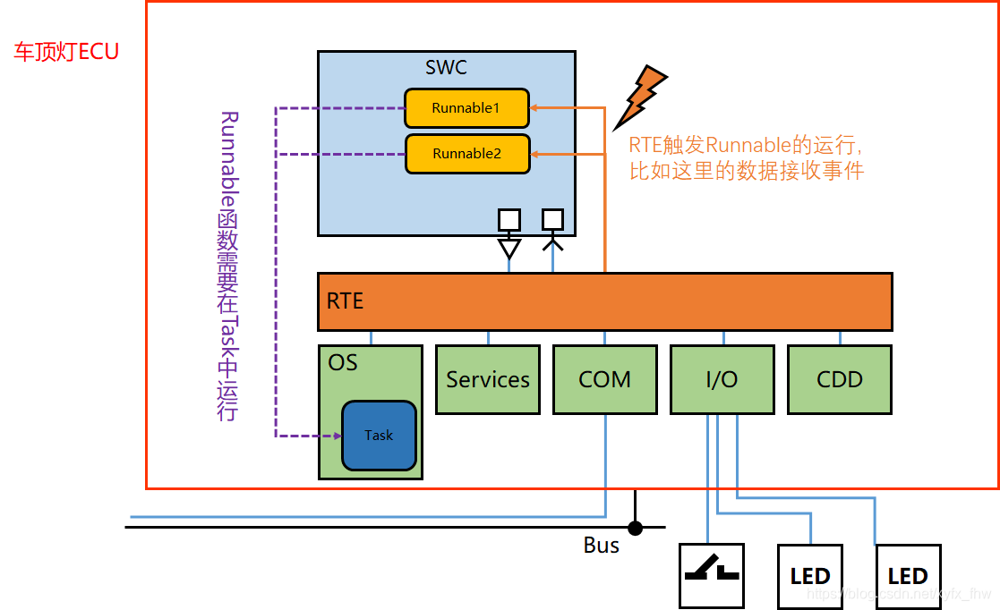
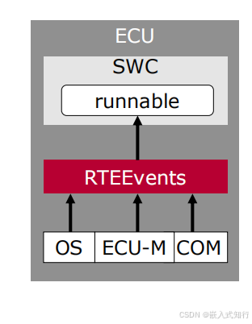
在 DaVinci 软件中完成配置后，工具会自动生成调用 runnable 的 task 代码。例如配置好端口后，runnable 中可以直接使用 RTE 生成的接口函数读写数据：
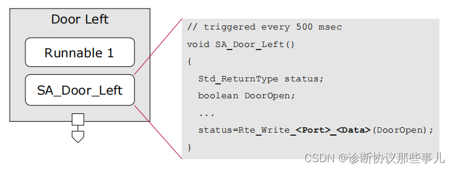
三、RTE对Ports的支撑
3.1 RTE的特征
RTE 在端口通信方面扮演着 SWC 和 BSW 交流途径的角色，主要特征包括：
（1）作为 VFB 的具体实现；
（2）作为 S/R 接口的通信实现；
（3）作为 C/S 接口的通信实现；
（4）支持 ECU 内部通信 / 跨 ECU 通信（跨 ECU 时通过 COM）；
（5）实现 AR-COM 的回调功能——具体实现在 SWC 中完成，RTE 负责完成这个回调机制。
SWC 之间通过端口（Ports）进行通信，端口按方向可分为 R-Ports（需求接口，蓝色）、P-Ports（提供接口，黄色）和 PR-Ports（需求且提供接口，绿色）三类；而端口上承载的接口按用途又分为下文介绍的 S/R 与 C/S 两种通信类型：

此外，RTE 还提供了实现数据一致性的机制（当多个 SWC 同时操作同一个数据时，可能会发生一些不想看到的问题，数据一致性要求不能发生这些问题）、支持简单和复杂的数据类型、支持 SWC type 的实例化（SWC type 就好像 int 这个类型，可以实例化出一个具体的 SWC，就像用 int 实例化一个 count 变量一样）。
3.2 S/R接口的三种方式
S/R（Sender/Receiver，发送者/接收者）接口用来传输数据：发送方通过 S/R 发送端口（P-Port）发出数据，接收方通过 S/R 接收端口（R-Port）取得数据，数据由 RTE 统一转交和管理，避免多个组件同时读写同一数据时出错：
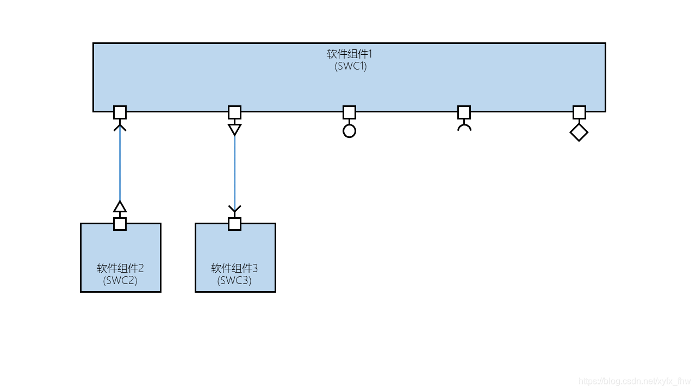
S/R 接口有三种不同的调用方式。以下调用代码在配置好 DaVinci 后会自动生成到 runnable 上方，可以直接复制使用：
| 调用方式 | 函数形式 | 特点 |
|---|---|---|
| 直接调用（Direct） | Rte_IRead / Rte_IWrite | 通信简单直接、效率高，读写的是数据的隐式副本 |
| 缓存调用（Buffered） | Rte_Read / Rte_Write | 通信灵活、降低发送端与接收端的耦合度，始终操作最新数据副本 |
| 队列调用（Queued） | Rte_Send / Rte_Receive | 数据以队列方式传递，可缓解发送端与接收端之间的压力 |
三种调用方式的差异体现在 RTE 内部缓冲的组织形式上，对比如下：
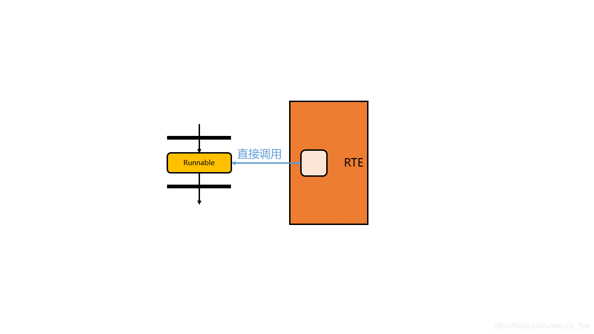
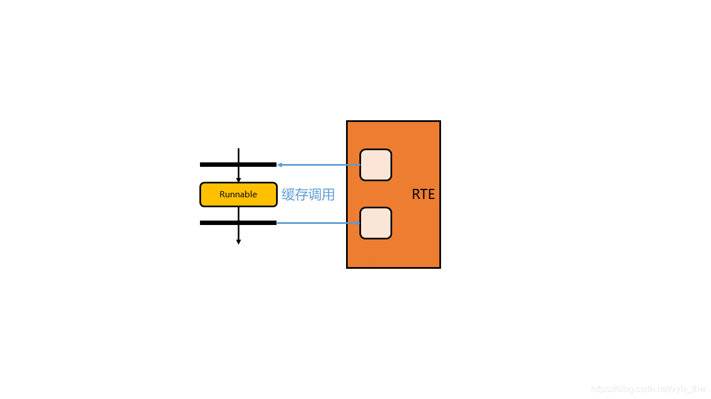
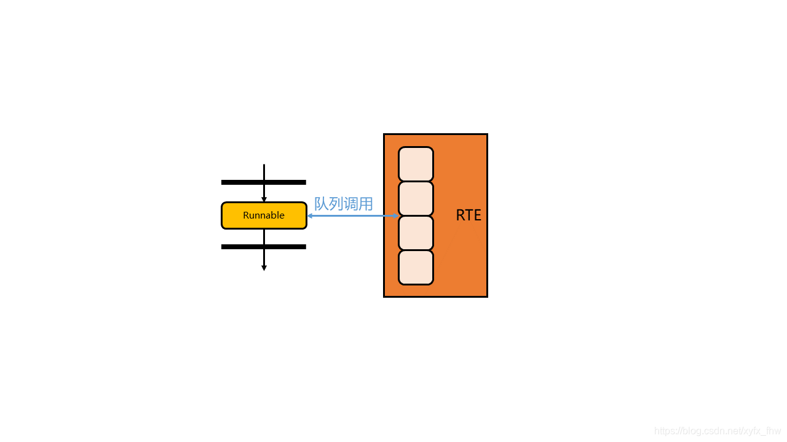
3.3 跨ECU的方式
ECU 内部通信时，SWC 之间的数据直接由 RTE 转交；当通信双方位于不同的 ECU 上时，在 runnable 中调用 Rte_Write_<port>_<Data>() 后，数据要走的路径是：runnable（ECU1）→ RTE（ECU1）→ BSW（ECU1）→ 外部总线 → BSW（ECU2）→ RTE（ECU2）→ runnable（ECU2）。其中用于 COM 传输的两个函数名是 Com_SendSignal() 和 Com_ReceiveSignal()：
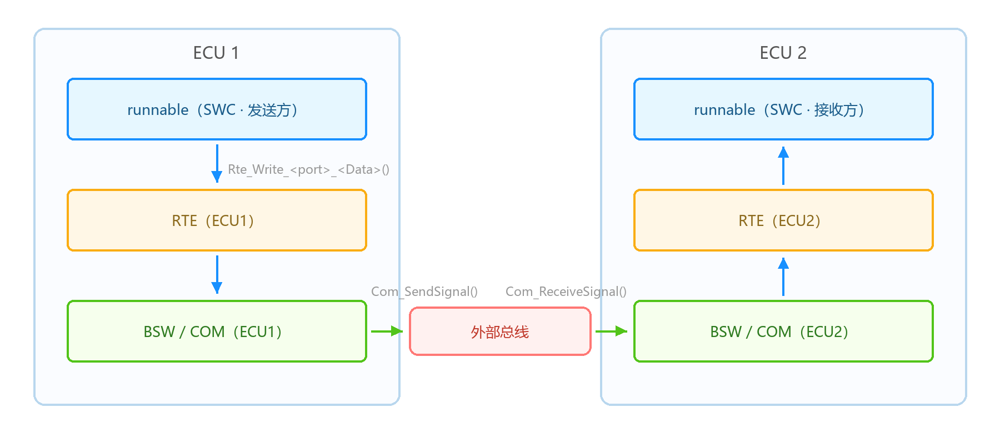
3.4 C/S接口的实现
C/S（Client/Server，客户/服务）接口用来执行操作，与 S/R 接口传输数据不同。也就是我写着写着代码，发现我想要调用一个函数，而这个函数在其他 SWC 中——由于 SWC 之间不能直接通信（有隔阂），这时我就悄悄告诉 RTE"我想要执行那个函数"，RTE 就会帮我告诉服务端，让服务端执行该函数。一个服务端 SWC 可以同时为多个客户端 SWC 提供服务：

而这里又有两种方式：同步和异步。
3.5 同步调用与异步调用
| 调用方式 | 行为 | 比喻 |
|---|---|---|
| 同步调用（Synchronous） | 客户等待服务端运行完该函数，RTE 返回函数结果后，客户才开始继续自己的工作 | "我很懒"，必须等结果 |
| 异步调用（Asynchronous） | 客户通知 RTE 转告服务端运行函数后，就继续干自己的事；过一段时间后再来请求函数结果 | "我很勤快"，先忙别的 |
需要注意：同步和异步调用不是通过函数区分的，而是必须事先在 DaVinci 中配置好、由 RTE 生成——所以在 DaVinci 中配置 runnable 的 port 时，是有同步/异步这个选项的。
四、RTE对数据一致性的管理
4.1 什么是数据一致性
引用百度百科的定义：数据一致性，就是当多个用户试图同时访问一个数据库，它们的事务同时使用相同的数据时，可能会发生以下四种情况：丢失更新、未确定的相关性、不一致的分析和幻想读。
说得通俗一点：就是当多个操作同时读写同一个数据的时候，很有可能出 bug（实际是由于优先级的问题，可能出现我们的数据被篡改的情况，造成作者不想看到的数据结果）。在 AutoSAR 中，同一个 ECU 上多个 runnable 被调度到不同 Task 中并发运行，这种并发访问场景非常普遍，因此数据一致性管理尤为重要。
4.2 数据一致性的实现机制
AutoSAR 中数据一致性的实现机制主要有两个方面：
（1）利用 RTE 管理——比如 IRead（隐式读写缓存）机制：各 runnable 操作的都是数据的备份，不直接操作原数据。runnable 运行期间 RTE 先把数据复制一份给 runnable 使用，运行结束后再统一写回，避免了运行中途被其他任务篡改的问题。
（2）SWC 内部变量的管理——SWC 内部变量可以在 DaVinci 中直接配置，runnable 可以直接调用，就类似于一个 C 文件中定义的、没有被 extern 出去的全局变量。问题在于：同一个 C 文件中的函数可能被放在不同的 Task 上运行，就可能出现在同一时刻同时运行的情况，那么在调用这个全局变量的时候就可能出 bug。解决方法是使用 EAs（互斥访问区域，Exclusive Areas）和 IRVs（内部读写变量，Inter Runnable Variables）策略：通过 EAs 把访问临界变量的代码段保护起来（进入时关中断或加锁，退出时解锁），通过 IRVs 让 RTE 统一管理 runnable 之间传递的内部变量，从而确保多任务环境下的安全访问。
五、RTE与Interface接口
5.1 接口总览
AutoSAR 中的接口按照"函数名是否可变"和"使用位置"可分为三大类：AutoSAR 接口、标准接口、标准 AutoSAR 接口。下图将所有的接口以及其分布的位置都详细地标识了出来：
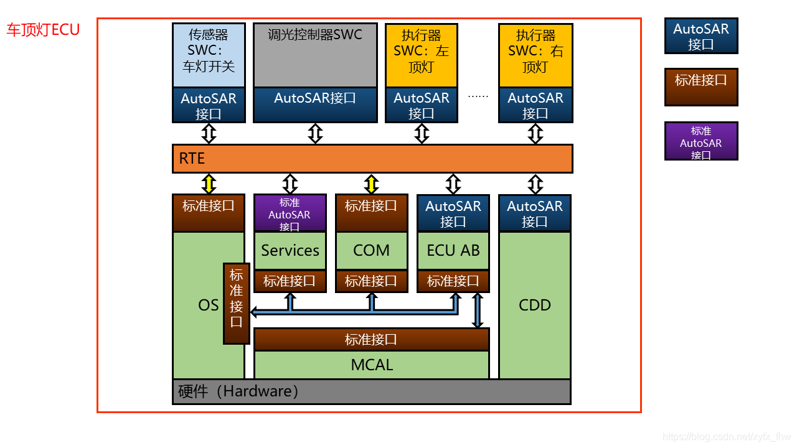
5.2 AutoSAR接口
一句话概括：之前说的 S/R 和 C/S 接口就是 AutoSAR 接口。
（1）特征：接口函数名可变。例如之前说过的 Std_ReturnType Rte_Read_<port>_<data>(<DataType> *data) 这种形式的 S/R 函数，其中的 <port> <data> 就是用户自己配置的名字，因此这些接口的函数名都是可以改变的，但大体的形式是不变的。
（2）位置：SWC<>RTE、RTE<>CDD、RTE<>COM 等连接处。
5.3 标准接口与标准AutoSAR接口
| 接口类型 | 函数名 | 典型位置 | 说明 |
|---|---|---|---|
| AutoSAR 接口 | 可变（Rte_Read_<port>_<data>） | SWC<>RTE 等 | 即 S/R、C/S 接口，函数名由用户配置生成 |
| 标准接口 | 固定（如 OSEK OS 的 API） | BSW 模块之间、BSW 内部（RTE<>OS 等） | 函数名由标准统一规定，不可配置 |
| 标准 AutoSAR 接口 | 固定 | SWC<>RTE、RTE<>CDD 等位置 | 位置与 AutoSAR 接口相同，但函数名由标准固定（如 RTE 的模式管理接口） |
简单记忆：AutoSAR 接口名可变、标准接口名固定且位于 BSW、标准 AutoSAR 接口名固定但位置与 AutoSAR 接口相同。三种接口在图 5-1 中分别用蓝色、棕色、紫色标注。
参考来源：CSDN 博主 雪云飞星《AutoSAR系列讲解（入门篇）》3.1 RTE概述 / 3.2 RTE对Runnables的运行支撑 / 3.3 RTE对Ports的支撑（上）/ 3.4 RTE对Ports的支撑（下）/ 3.5 RTE对数据一致性的管理 / 3.6 RTE与Interface接口